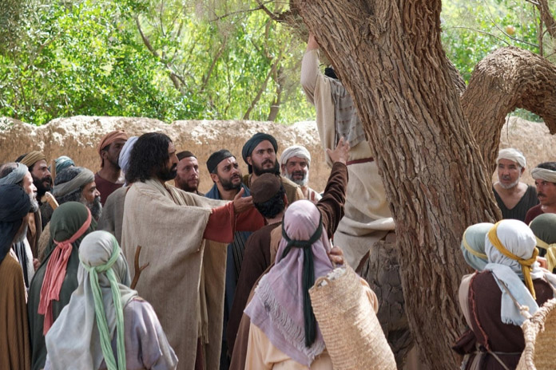

Leitura Orante
Leituras do Dia
Terça-feira - Santa Isabel da Hungria, Esposa e Religiosa
(branco – ofício da memória)
17 de novembro de 2020

Leitura Orante do Evangelho
Ouça o áudio da oração e reflexão do padre Francisco das Chagas


Oração do dia
Ó Deus, que destes à Santa Isabel da Hungria reconhecer e venerar o Cristo nos pobres, concedei-nos, por sua intercessão, servir os pobres e aflitos com incansável caridade. Por Nosso Senhor Jesus Cristo, Vosso Filho, na unidade do Espírito Santo.
Leitura: Apocalipse 3,1-6.14-22
Eu, João, ouvi o Senhor que me dizia: 1“Escreve ao anjo da Igreja que está em Sardes: Assim fala aquele que tem os sete espíritos de Deus e as sete estrelas: Conheço a tua conduta. Tens fama de estar vivo, mas estás morto. 2Acorda! Reaviva o que te resta e que estava para se apagar! Pois não acho suficiente aos olhos do meu Deus aquilo que estás fazendo. 3Lembra-te daquilo que tens aprendido e ouvido. Observa-o! Converte-te! Se não estiveres vigilante, eu virei como um ladrão, sem que tu saibas em que hora te vou surpreender! 4Todavia, aí em Sardes existem algumas pessoas que não sujaram a roupa. Estas vão andar comigo, vestidas de branco, pois merecem isso. 5O vencedor vestirá a roupa branca, e não apagarei o seu nome do livro da vida, mas o apresentarei diante de meu Pai e de seus anjos. 6Quem tem ouvidos ouça o que o Espírito diz às Igrejas. 14Escreve ao anjo da Igreja que está em Laodiceia: Assim fala o Amém, a testemunha fiel e verdadeira, o princípio da criação de Deus: 15Conheço a tua conduta. Não és frio nem quente. Oxalá fosses frio ou quente! 16Mas, porque és morno, nem frio nem quente, estou para vomitar-te de minha boca. 17Tu dizes: ‘Sou rico e abastado e não careço de nada’, em vez de reconhecer que tu és infeliz, miserável, pobre, cego e nu! 18Dou-te um conselho: compra de mim ouro purificado no fogo, para ficares rico, e vestes brancas, para vestires e não aparecer a tua nudez vergonhosa; e compra também um colírio para curar os teus olhos, para que enxergues. 19Eu repreendo e educo os que eu amo. Esforça-te, pois, e converte-te. 20Eis que estou à porta e bato; se alguém ouvir minha voz e abrir a porta, eu entrarei na sua casa e tomaremos a refeição, eu com ele e ele comigo. 21Ao vencedor farei sentar-se comigo no meu trono, como também eu venci e estou sentado com meu Pai no seu trono. 22Quem tem ouvidos ouça o que o Espírito diz às Igrejas” – Palavra do Senhor.
Salmo Responsorial: 14(15)
Ao vencedor, dar-lhe-ei o direito de sentar-se comigo no meu trono.“Senhor, quem morará em vossa casa?” É aquele que caminha sem pecado e pratica a justiça fielmente; que pensa a verdade no seu íntimo e não solta em calúnias sua língua.
Ao vencedor, dar-lhe-ei o direito de sentar-se comigo no meu trono.
Que em nada prejudica o seu irmão nem cobre de insultos seu vizinho; que não dá valor algum ao homem ímpio, mas honra os que respeitam o Senhor
Ao vencedor, dar-lhe-ei o direito de sentar-se comigo no meu trono.
Não empresta o seu dinheiro com usura nem se deixa subornar contra o inocente. Jamais vacilará quem vive assim!
Ao vencedor, dar-lhe-ei o direito de sentar-se comigo no meu trono.Evangelho: Lucas 19,1-10
Naquele tempo,1Jesus tinha entrado em Jericó e estava atravessando a cidade. 2Havia ali um homem chamado Zaqueu, que era chefe dos cobradores de impostos e muito rico. 3Zaqueu procurava ver quem era Jesus, mas não conseguia por causa da multidão, pois era muito baixo. 4Então ele correu à frente e subiu numa figueira para ver Jesus, que devia passar por ali. 5Quando Jesus chegou ao lugar, olhou para cima e disse: “Zaqueu, desce depressa! Hoje eu devo ficar na tua casa”. 6Ele desceu depressa e recebeu Jesus com alegria. 7Ao ver isso, todos começaram a murmurar, dizendo: “Ele foi hospedar-se na casa de um pecador!” 8Zaqueu ficou de pé e disse ao Senhor: “Senhor, eu dou a metade dos meus bens aos pobres e, se defraudei alguém, vou devolver quatro vezes mais”. 9Jesus lhe disse: “Hoje a salvação entrou nesta casa, porque também este homem é um filho de Abraão. 10Com efeito, o Filho do Homem veio procurar e salvar o que estava perdido”. – Palavra da Salvação.
Leituras do mês
TAGS
missao Amazonia evengel covid-19 indigenas novica papa francisco
Destaques
Província Stella Matutina
Rua São Benedito, 2146 - Santo Amaro - São Paulo - SP |
Tel. (11) 5547-7222


Província Spiritus Divinae Sapientiae
Rua Arnaldo Janssen, 320 - Cara-Cara - Ponta Grossa - PR |
Tel. (42) 3326 4091